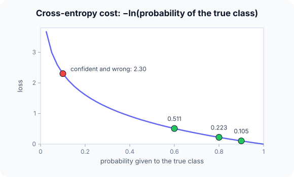

Prerequisites
- Sigmoid and softmax outputs.
- Natural logarithm: $\ln 1 = 0$, $\ln p < 0$ for $p < 1$.
- MSE.
The analogy
Everyday analogy
Think of a weather forecaster scored on rain predictions. Saying "90% rain" on a rainy day costs very little; saying "10% rain" on a rainy day costs a lot, because they were confident and wrong.
Cross-entropy scores probability forecasts exactly like that. MSE is a gentler judge that just measures the gap between the number and the truth.
How it works
The losses: regression: MSE $= \frac1n\sum (y_i - \hat y_i)^2$. Binary classification: BCE $= -\frac1n\sum [y_i \ln p_i + (1 - y_i)\ln(1 - p_i)]$. Multi-class: CE $= -\ln p_{\text{true class}}$, averaged.
Start with three predictions by hand
Labels $y = [1, 0, 1]$, predicted probabilities $p = [0.9, 0.2, 0.6]$. Predict, then open "Check".
Example: predict before you read
Step 1. MSE: square each gap and average.
Check
Gaps 0.1, 0.2, 0.4; squares 0.01, 0.04, 0.16; MSE $= 0.07$.
Step 2. Cover the next line and guess: the probability each prediction gave to the true class.
Check
0.9 (true 1), $1 - 0.2 = 0.8$ (true 0), 0.6 (true 1).
Step 3. BCE: average $-\ln$ of those three probabilities.
Check
$-\ln 0.9 \approx 0.105$, $-\ln 0.8 \approx 0.223$, $-\ln 0.6 \approx 0.511$; mean $\approx 0.280$.

Quick recall: Before reading further, cover the text above and say out loud: what does cross-entropy charge for a prediction?
Check your answer
Minus the log of the probability the model gave to the true class: near 0 when that probability is high, huge when it is low.
Finish the picture: confident mistakes
Change the third prediction from 0.6 to 0.1 (true label still 1).
- MSE. Predict the new value.
Check
Gap 0.9, square 0.81: MSE $= (0.01 + 0.04 + 0.81)/3 \approx 0.287$.
- BCE. Predict the new value.
Check
$-\ln 0.1 \approx 2.303$: BCE $= (0.105 + 0.223 + 2.303)/3 \approx 0.877$. Cross-entropy punishes the confident mistake far harder.
Quick recall: Without scrolling up, say out loud: what is the multi-class cross-entropy for probabilities [0.7, 0.2, 0.1] when class 1 is true?
Check your answer
$-\ln 0.7 \approx 0.357$; only the true class's probability matters.
Full worked calculation
The page's three predictions, true labels $[1, 0, 1]$ and probabilities $[0.9, 0.2, 0.6]$, scored term by term with MSE and with cross-entropy. Then the multi-class version (softmax + cross-entropy) and a look at the gradients, which is where the two losses really differ.
| Example | $y$ | $p$ | Prob. of true class | MSE term $(y - p)^2$ | BCE term $-\ln(\cdot)$ |
|---|---|---|---|---|---|
| 1 | 1 | 0.9 | 0.9 | 0.01 | 0.105 |
| 2 | 0 | 0.2 | 0.8 | 0.04 | 0.223 |
| 3 | 1 | 0.6 | 0.6 | 0.16 | 0.511 |
| Mean | 0.07 | 0.280 |
-
1MSE term by term
$$(1 - 0.9)^2 = 0.01, \quad (0 - 0.2)^2 = 0.04, \quad (1 - 0.6)^2 = 0.16 \;\Rightarrow\; \text{MSE} = \frac{0.21}{3} = 0.07$$Squared distance between the label and the predicted probability, averaged.
-
2Probability given to the true class
$$y = 1: \; p, \qquad y = 0: \; 1 - p \;\Rightarrow\; [0.9,\; 0.8,\; 0.6]$$Cross-entropy only looks at how much probability the model gave to the correct answer. Example 2 has label 0, so the relevant number is $1 - 0.2 = 0.8$.
-
3BCE term by term
$$-\ln 0.9 = 0.105, \quad -\ln 0.8 = 0.223, \quad -\ln 0.6 = 0.511 \;\Rightarrow\; \text{BCE} = \frac{0.839}{3} = 0.280$$$-\ln$ is 0 for a perfect prediction and grows without limit as the probability drops. The least confident example (0.6) contributes most.
-
4A confident mistake
$$y = 1, \; p = 0.1: \quad \text{MSE term} = 0.81, \qquad \text{BCE term} = -\ln 0.1 = 2.303$$MSE can never exceed 1 per example. Cross-entropy punishes being confidently wrong much harder, which is exactly what we want from a classifier.
-
5Gradients with respect to p
$$\frac{\partial\,\text{MSE}}{\partial p} = 2(p - y) = -1.8, \qquad \frac{\partial\,\text{BCE}}{\partial p} = -\frac{1}{p} = -10$$For the confident mistake the cross-entropy gradient is more than 5 times stronger, so learning corrects it quickly. Combined with a sigmoid, BCE's gradient on the score becomes simply $p - y$.
-
6Multi-class: softmax then cross-entropy
$$z = [2, 1, 0.1] \;\Rightarrow\; e^z = [7.389, 2.718, 1.105], \; \sum = 11.21 \;\Rightarrow\; p = [0.659, 0.242, 0.099]$$With three classes, softmax turns the scores into probabilities first.
-
7Categorical cross-entropy and its gradient
$$\text{true class } 1: \; L = -\ln 0.659 = 0.417, \qquad \frac{\partial L}{\partial z} = p - \text{onehot} = [-0.341,\; 0.242,\; 0.099]$$Only the true class's probability enters the loss. The gradient pushes the true score up (negative) and the others down, in proportion to how much probability they stole.
What the numbers tell us
MSE = 0.07 and BCE = 0.28 on the same predictions, but they rank mistakes differently: cross-entropy explodes for confident errors.
Use MSE for regression, binary cross-entropy for yes/no outputs, and softmax + cross-entropy for several classes.
The rule in plain words
Match the loss to the output: MSE (or MAE / Huber) for real-valued outputs, binary cross-entropy after a sigmoid, categorical cross-entropy after a softmax.
Training minimises the average loss over the training set; its gradient drives every weight update.
Quick recall: Before you read the code, describe how to compute BCE for a batch, in your own words. Then check below.
Check your answer
For each example, take $p$ if the label is 1 or $1 - p$ if it is 0, take minus its log, and average over the examples.
The code
Read this code after you have computed both losses by hand. It will make more sense.
double mse(double y[], double p[], int n) {
double s = 0;
for (int i = 0; i < n; i++) s += (y[i] - p[i]) * (y[i] - p[i]);
return s / n;
}
double bce(int y[], double p[], int n) { /* binary cross-entropy */
double s = 0;
for (int i = 0; i < n; i++) s -= y[i] ? log(p[i]) : log(1 - p[i]); /* -ln P(true class) */
return s / n;
}Definition
What you just did, in one line: a loss function measures how far a model's predictions are from the targets; MSE averages squared errors (regression), cross-entropy averages $-\ln$ of the probability given to the true class (classification).
flowchart TD
A{"What does the model output?"} -->|"a real number"| R{"Outliers a concern?"}
R -->|no| MSE["MSE"]
R -->|yes| H["MAE or Huber loss"]
A -->|"one probability (sigmoid)"| BCE["binary cross-entropy"]
A -->|"K class probabilities (softmax)"| CE["categorical cross-entropy"]
Putting numbers on it
Quick recall: Before looking at the formula, predict: which loss gives larger gradients for a confident wrong answer, MSE or cross-entropy?
Check your answer
Cross-entropy: its penalty grows without bound, while MSE's gap is at most 1 for probabilities.
The two losses with our numbers:
$$\text{MSE} = \tfrac13(0.1^2 + 0.2^2 + 0.4^2) = 0.07, \qquad \text{BCE} = -\tfrac13(\ln 0.9 + \ln 0.8 + \ln 0.6) \approx 0.280$$| Loss | Formula (one example) | Use with | Our 3rd example (p = 0.6) |
|---|---|---|---|
| MSE | $(y - \hat y)^2$ | Regression (linear output) | 0.16 |
| MAE | $|y - \hat y|$ | Regression, robust to outliers | 0.4 |
| Binary CE | $-[y \ln p + (1-y)\ln(1-p)]$ | Sigmoid output | 0.511 |
| Categorical CE | $-\ln p_{\text{true}}$ | Softmax output | — |
Warning
$\ln 0$ is $-\infty$. If a model outputs exactly 0 or 1, cross-entropy becomes infinite or undefined. Frameworks clip probabilities or compute the loss directly from the raw scores (logits) for numerical stability.
Exam tip
For cross-entropy, first write down the probability given to the true class for each example, then take $-\ln$ and average. That avoids sign and $1 - p$ mistakes.
Common mistakes
- Using $p$ instead of $1 - p$ for examples whose true label is 0.
- Using MSE with a sigmoid output for classification, which gives weak gradients for confident mistakes.
- Applying softmax twice: once in the model and again inside a loss that expects raw scores.
Try it yourself
Exercise 1 (warm-up)
Compute the binary cross-entropy of a single prediction $p = 0.5$ with label 1.
Hint
$\ln 0.5 \approx -0.693$.
Answer
$-\ln 0.5 \approx 0.693$: the cost of a pure coin-flip guess.
Exercise 2 (a bit harder)
A 3-class model outputs probabilities [0.7, 0.2, 0.1], [0.1, 0.8, 0.1] and [0.3, 0.3, 0.4] for three examples whose true classes are 1, 2 and 1. Compute the average categorical cross-entropy. Write your answer down before you open it.
Show answer
$-\ln 0.7 \approx 0.357$, $-\ln 0.8 \approx 0.223$, $-\ln 0.3 \approx 1.204$; average $\approx 0.595$.
Did you know?
Did you know?
Cross-entropy comes from Claude Shannon's information theory (1948): it measures how many extra bits you need when you encode outcomes using the model's probabilities instead of the true ones.
Minimising cross-entropy is the same as maximising the likelihood of the training labels, which is why it is the default loss for classification.
Key points to remember
If you remember one thing from each line, remember the because.
- Training minimises the loss because the loss defines what "better predictions" means.
- Cross-entropy punishes confident mistakes because $-\ln p$ grows without bound as $p \to 0$.
- MSE suits regression because it measures squared distance between numbers.
- Only the true class's probability matters in cross-entropy because the label is one-hot.
- Logits are used for stability because computing $\ln$ of a probability near 0 loses precision.
Self-check questions
Answer these in order, out loud. They follow the page, so your answers become the script of your video.
- How is cross-entropy like scoring a weather forecaster?
Sample answer
A confident correct forecast costs almost nothing, while a confident wrong forecast costs a lot, just as $-\ln p$ is small for high $p$ and huge for low $p$.
- Compute MSE and BCE for labels [1, 0, 1] and predictions [0.9, 0.2, 0.6].
Sample answer
MSE $= 0.07$; BCE $= (0.105 + 0.223 + 0.511)/3 \approx 0.280$.
- Why does
bceuselog(1 - p[i])when the label is 0?A good answer says what $1 - p$ is.
Sample answer
$p$ is the probability of class 1, so the probability given to the true class 0 is $1 - p$; cross-entropy charges $-\ln$ of that.
- So what is a loss function, in one sentence?
Sample answer
A function that turns the gap between predictions and targets into one number that training tries to minimise.
- Why does changing one prediction from 0.6 to 0.1 hurt BCE much more than MSE?
A good answer compares 0.81 with 2.30.
Sample answer
MSE adds $0.9^2 = 0.81$, while BCE adds $-\ln 0.1 \approx 2.30$; the log grows without limit near 0, so confident mistakes dominate.
- Which loss goes with which output layer?
Sample answer
MSE (or MAE/Huber) with a linear output; binary cross-entropy with a sigmoid; categorical cross-entropy with a softmax.
- Why are losses often computed from logits rather than probabilities?
Sample answer
For numerical stability: it avoids taking the log of values that rounded to 0 or 1.
- If you had to teach this to a friend in 2 minutes, what would you leave out, and why?
Sample answer
I'd leave out MAE, Huber and the logits detail. I'd keep the forecaster analogy, the 3-example MSE and BCE, and "MSE for numbers, cross-entropy for probabilities".
External resources
- PyTorch docs: Loss functions: MSELoss, BCEWithLogitsLoss, CrossEntropyLoss and more.
- Wikipedia: Cross-entropy: the information-theory background.
- Google ML Crash Course: Log loss: why log loss for probabilities.
Videos
- YouTube search: StatQuest cross-entropy: StatQuest's clear walkthrough.